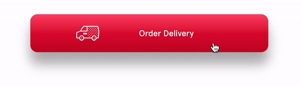
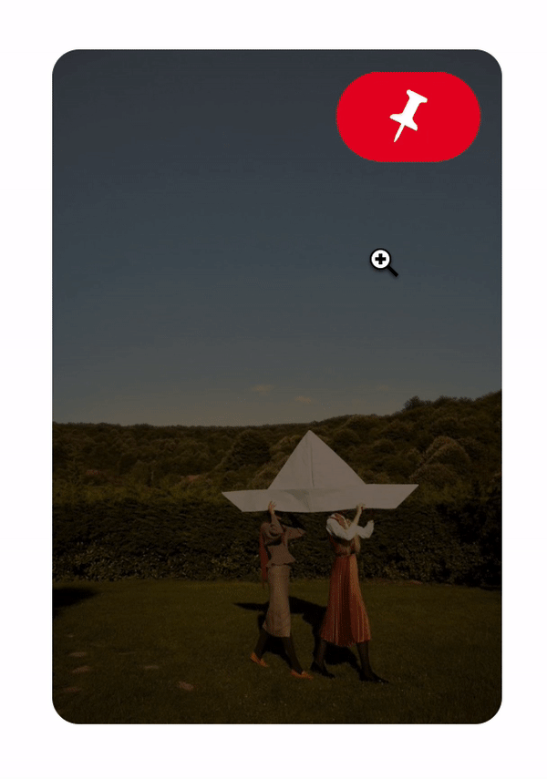
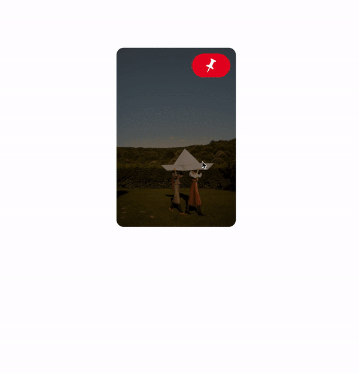

IDM 241: Microinteractions
IDM 241: Microinteractions
Pinterest is a visual search engine that allows users to explore and save different ideas and inspirations. With over 86 million users, Pinterest is the 14th largest social media networks in the world.
In this project, I redesigned Pinterest’s micro-interactions with simple interactions that would enhance the user experience and function. I created and developed three phases of micro-interactions (alpha, beta, and final) within 2-3 weeks each over the span of 10 weeks. Each phase was built upon the previous, leading up to the final product. As a result, I managed to code a functional micro-interaction of pinning an image.
Micro-interactions are visual feedback indicators which provide the users with enough knowledge to understand the function. It also engages users and brings delight in small interactions. Over 10 weeks, I learned to mock-up and develop existing micro-interactions to improve upon and create meaningful interactions for users.
I chose Pinterest to redesign because of the potential to push the branding into the micro-interaction. On Pinterest, users “pin” images to save. With the imagery of a pushpin and the action of pinning, I incorporated this into the animations of the final product.
Pinterest uses good micro-interactions, so rather than coming up with something entirely new, I decided to find areas that could bring a unique flair without losing the core function. Because Pinterest is a visual website, I also had to consider keeping the animations simple, so it doesn’t take away from the main content.
Although working on this project for 10 weeks total, three levels of micro-interactions: alpha, beta and final, were given 2-3 weeks to conceptualize and develop. Considering the short time frame, I had to manage my time and consider feasibility within the time frame without sacrificing the quality of a meaningful micro-interaction.
In this project, I aimed to create multiple micro-interactions forming an interactive experience that brings delight following the project timeline.
For my alpha micro-interaction, I originally chose the chick-fil-A button to build because the feedback was so subtle that it was hard to notice when interacting with it. To provide clear feedback, I made the shadow being used darker and animate the truck image to slide on the x-axis to give it movement on hover. Because I felt I couldn’t add more to this micro-interaction for the next two phases, I did not continue further on the Chick-fil-A button.
Following my alpha build, I decided to take Pinterest and redesign the experience of pinning and saving images. On Pinterest’s website, it reveals the function to save or pin after the user hovers over the image. This is so that the image can be seen without distractions. I kept this hover interaction to keep the entire image visible. The “save” button on Pinterest’s website was changed to a pin image which animates like pushing in a pin on click. The code for the truck animation on the alpha build was reused here because of the similarity that both icons animated across the axis. On hover and click, this button would be indicated by a change of different color. Off hover, the user could see if they had already clicked to pin.
I started coding using HTML and CSS, which I felt most comfortable using, but found difficulty for micro-interactions triggered by clicks. I had to implement JavaScript to get the animation to know and show when a user clicked to pin and unpin, especially off hover when it is not visible.
My last addition to the Pinterest micro-interactions was the “pinned” and “removed” modal after clicking to pin or unpin. This exists the same on the current website but to bring more personality I developed a different entering and exiting animation. To keep the theme of pinning, I used the puff-in animation which looks like the modal is being pinned onto the bottom of the screen. The modal remains on the screen unless clicked “x” or unpinned from the “pin” button which differs from Pinterest’s website that disappears on a timer. When it disappears too quickly, it is more difficult to utilize the undo button on the modal.
While developing, I came across the difficulty of timing the modal to come in and come out. For my “removed” modal, I received feedback to shorten my display time originally set for 5 seconds which was too long and shortened to 2 seconds. This allows for enough time to read the modal before it disappears.
The final build is the product of accumulated micro-interactions and evolved knowledge from each phase to improve on the next. This solution allows the user to hover on the image, pin to save, and view a modal to save and remove.
Although the micro-interaction works as it is supposed to, there are bugs when the “pin” button is clicked too fast that the modals animation entering in and out break. For future iterations, I would focus on fixing this issue to accommodate for situations where it may quick clicking might occur.
Through this project, I was able to push my creative and coding skills to come up with unique micro-interactions and develop them. I was successful in completing each phase within the time frame and with a function, and responsive product.